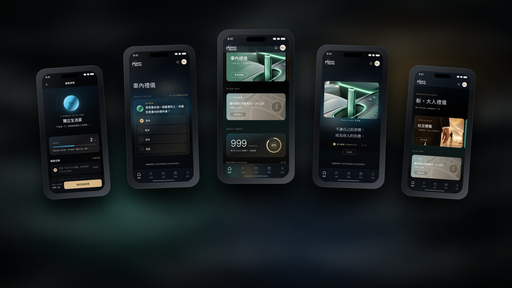
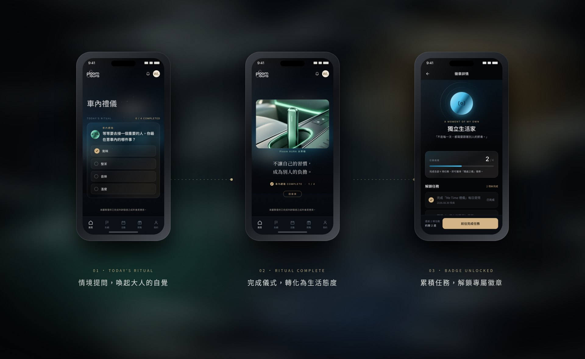
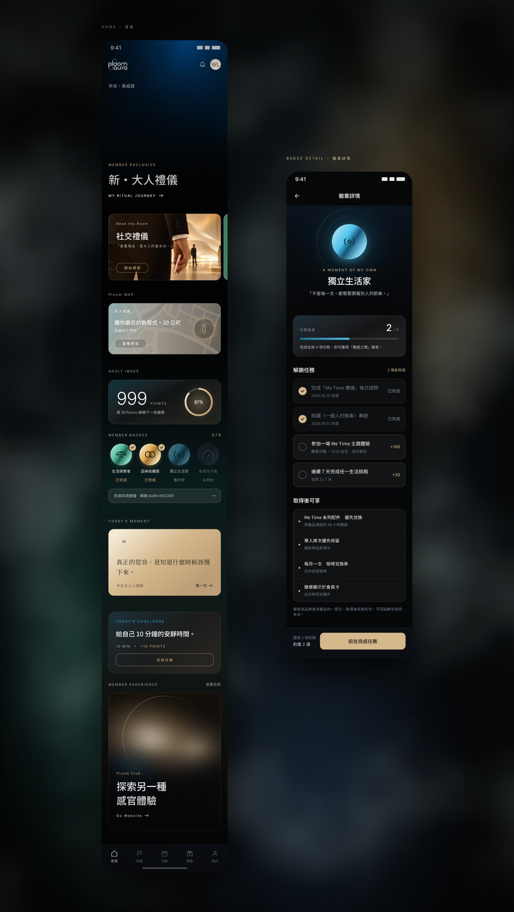

專案概述｜Overview
在喧囂之外，留一段只屬於自己的時刻。這是為 JTI 內部提案設計的 Ploom AURA 會員 LINE Mini App：從使用者訪談出發，將「安靜、放鬆」的使用情境，轉化為一套以氛圍與儀式感驅動的會員體驗，讓品牌不只被使用，而是陪伴成熟大人建立屬於自己的生活節奏。
洞察｜Insight
訪談發現，使用者在使用產品的當下，追求的不是更多資訊，而是一段安靜、不被打擾的片刻。因此體驗設計的核心，從「功能效率」轉向「感受與節奏」。
概念｜新・大人禮儀
以「新・大人禮儀」作為會員旅程的主軸，將車內、社交、Me Time 與居家四種生活情境，對應產品的四種色彩，讓每一次互動都成為一次得體、有品味的生活練習。
氛圍設計｜Ambient Layer
設計帶有聲光與煙霧質感的動態背景，以緩慢流動的光影營造療癒、沉浸的氛圍。介面退居其後，讓情緒先於資訊被感受。
參與機制｜Ritual Journey
以大人感的任務與內容取代傳統集點：每日情境提問、完成儀式、累積徽章，一步一步解鎖專屬權益，把會員經營從「交易」轉化為「養成」。

Ritual Journey｜一步一步，解鎖大人感
從一個情境提問開始，使用者在完成儀式的過程中，重新思考自己與他人的相處方式；每完成一項任務，就離下一枚徽章更近一步，讓成長被看見，也讓品牌關係自然累積。

Interface｜讓介面安靜下來
以深色基調、低彩度材質與柔和光暈建立沉穩的視覺語言，並透過卡片化的內容模組，讓禮儀內容、會員地圖、成人指數與徽章進度，在同一個節奏裡被瀏覽。
